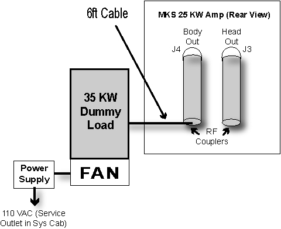
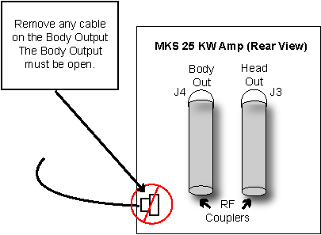

GE Exclusive Use Only
Direction 5440000, Rev# 5
Module Version 4.0, Version Date 6/1/09
GE Exclusive Use Only |
| ||||
| FATAL ELECTRIC SHOCK HAZARD! | ||||
| dangerous voltages throughout the cabinet. | ||||
| TO PREVENT FATAL electrical SHOCK, MAKE SURE THE RF AMPLIFIER IS DISABLED WHEN CONFIGURING THE CALIBRATION TOOLS. |
To inhibit TR faults, disable the Driver Module TR fault detection in the RFS (RF in the System Cabinet). Move the SW2 switch to the TR DISABLE position. (See Illustration 1.)
(For 1.5T Systems) Remove the Body Heliax Cable from J4 on the back of the RF Amplifier, and connect the RF dummy load into J4 as shown in Illustration 2.
(For 3.0T and LCC300 Systems) Remove the Body Heliax Cable from J4, and connect the 35 kW RF dummy load into J4. Plug the power supply on the dummy load into a 110 VAC service outlet in the System Cabinet. (See Illustration 3.)
(For 3T/94 Excite-Based Systems) Remove the Body Heliax Cable from the coupler connected to J4, and connect the 35 kW RF dummy load into J4. Plug the power supply on the dummy load into a 110 VAC service outlet in the System Cabinet. (See Illustration 4.)
Illustration 4: Setup for 3T/94 Body Output Measurement

This tool must see a Landmark. It is not necessary to have a Body Phantom in place, or any other scan parameter entered other than what is described below.
Press the [Align] button.
Move the cradle into the bore.
Press the [Landmark] button when the alignment light is approximately where the center of the Body Phantom would be.
Start the UPM Calibration Tool.
Select [1H] for Nuclei.
Select [Body] for the RF Chain to be calibrated.
Select [Forward] for the Power (monitor) Type.
Select [Calibrate] for the Test.
Select [Start], and validate the hardware setup, then select [Yes].
Verify the status indicates a Pass or Fail within five minutes. (Tool should notify user of the current step in progress.) If failure occurs, see UPM Troubleshooting.
(For 3.0T and LCC300 Systems) Disconnect the RF dummy load from the Body Output J4 on the back of the RF Amplifier as shown in Illustration 5.
Locate the 12 in. cable stub in the 3.0T Power Measurement Kit, and attach it to J4 using the necessary adapters. (See Illustration 7.
(For 3T/94 Excite-Based Systems) Disconnect the RF dummy load from the coupler connected to the Body Output J4 shown in Illustration 8.
Illustration 8: Cable Configuration for 3T/94 Systems

| NOTE: | If the RF Amplifier at the site is a 25 kW / 35 kW MKS version with an LCD display on the front, disconnect the dummy load directly from J4 because an RF coupler is not required for this amplifier. |
Return to the UPM Tool user interface.
Confirm [1H] is selected for Nuclei.
Confirm [Body] is selected for RF Chain.
Select [Reflected] for the Power (monitor) Type.
Confirm [Calibrate] is selected.
Click the [Start] button, validate your hardware setup, and select [Yes].
Verify that status indicates a Pass or Fail within five minutes. (Tool should notify user of the current step in progress.) If failure occurs, see UPM Troubleshooting.
Perform UPM - Body and Head Functional Check before proceeding to Finalization, Step 1.
Remove the cables and power measurement equipment.
Reconnect the Body Heliax Cable to the amplifier.
Re-enable T/R Drive fault detection. (See Illustration 1.)
Upon completion of UPM calibration, select [Reset TPS]. The system will not scan until this is done.